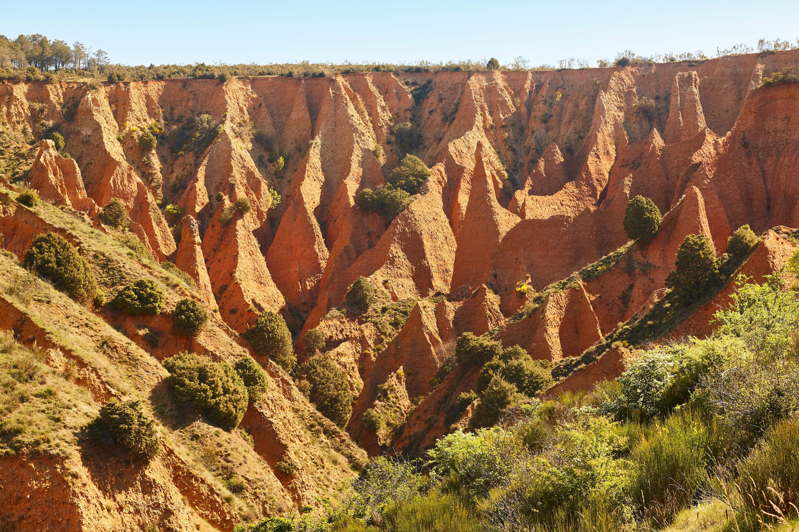

Una Provincia llena de Contrastes
Almería combina playas, zonas desérticas, pueblos blancos y espacios naturales. En pocos kilómetros podemos pasar del mar Mediterráneo al desierto de Tabernas.
En esta página veremos información sobre algunos lugares destacados. Puedes consultar también la web de turismo de Almería.
